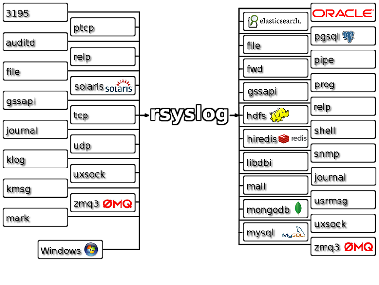

syslog协议与Rsyslog系统日志软件简介
1. syslog系统日志协议
1.1. syslog协议简介
- Unix/Linux系统中的绝大部分日志都是通过一种叫做syslog的机制产生和维护的。
- syslog协议是一个转发系统日志信息的标准，它是在美国加州大学伯克利软件分布研究中心BSD的 TCP/IP 系统实施中开发的，目前已成为一种工业标准协议。
- syslog协议可根据与日志消息的生产关系分为客户端和服务器端。其中客户端是产生日志消息的一方；服务器端负责接收客户端发送来的日志消息，并进行保存到特定的日志文件中或其他方式的处理。
- syslog记录着系统中的任何事件，任何希望生成日志的程序都可以向 syslog 发送信息。
1.2. syslog协议的日志信息结构
标准syslog协议的日志信息结构主要由PRI（priority，优先级）、HEADER、MSG三部分组成。下方为某syslog消息示例：
1 | <147>Oct 9 22:33:20 hlfedora auditd[1787]: The audit daemon is exiting. |
| <147>Oct 9 22:33:20 hlfedora auditd[1787]: The audit daemon is exiting. | ||||
| <147> | Oct 9 22:33:20 hlfedora | auditd[1787]: The audit daemon is exiting. | ||
| PRI | HEADER | MSG | ||
|---|---|---|---|---|
| <Facility * 8 + Severity> | 时间 | 主机名（或IP） | TAG（可选） | Content |
| <18(local2) * 8 + 3(Error)> | Oct 9 22:33:20 | hlfedora | auditd[1787]: | The audit daemon is exiting. |
其中“<147>”是PRI部分，“Oct 9 22:33:20 hlfedora”是HEADER部分，“auditd[1787]: The audit daemon is exiting.”是MSG部分。
1.2.1. PRI部分
PRI（priority，优先级）部分由尖括号包含的一个数字构成，这个数字包含了程序模块（Facility）、严重性（Severity），这个数字是由 Facility 乘以 8 再加上 Severity 得来。
1 | priNum = Facility * 8 + Severity |
协议定义了24个日志 程序模块（Facility）：
| Numerical Code | Facility |
|---|---|
| 0 | kernel messages |
| 1 | user-level messages |
| 2 | mail system |
| 3 | system daemons |
| 4 | security/authorization messages (note 1) |
| 5 | messages generated internally by syslogd |
| 6 | line printer subsystem |
| 7 | network news subsystem |
| 8 | UUCP subsystem |
| 9 | clock daemon (note 2) |
| 10 | security/authorization messages (note 1) |
| 11 | FTP daemon |
| 12 | NTP subsystem |
| 13 | log audit (note 1) |
| 14 | log alert (note 1) |
| 15 | clock daemon (note 2) |
| 16 | local use 0 (local0) |
| 17 | local use 1 (local1) |
| 18 | local use 2 (local2) |
| 19 | local use 3 (local3) |
| 20 | local use 4 (local4) |
| 21 | local use 5 (local5) |
| 22 | local use 6 (local6) |
| 23 | local use 7 (local7) |
Note 1 - Various operating systems have been found to utilize
Facilities 4, 10, 13 and 14 for security/authorization,audit, and alert messages which seem to be similar.
Note 2 - Various operating systems have been found to utilize
both Facilities 9 and 15 for clock (cron/at) messages.
协议定义了8个日志级别——严重性（Severity）：
| Numerical Code | Severity |
|---|---|
| 0 | Emergency: system is unusable |
| 1 | Alert: action must be taken immediately |
| 2 | Critical: critical conditions |
| 3 | Error: error conditions |
| 4 | Warning: warning conditions |
| 5 | Notice: normal but significant condition |
| 6 | Informational: informational messages |
| 7 | Debug: debug-level messages |
对上述PRI值为147的日志消息示例，syslog协议在：
填充PRI字段时，根据要传入日志消息的程序模块（Facility）和严重性（Severity）参数计算消息的PRI值：
1
18(local2) * 8 + 3(Error) = 147
解析时PRI字段时，取 PRI值(10010011B, 147) 的：
- 低位3位(011B, 3)即可得到Severity的值(Error)；
- 取PRI值的高5位（右移3位后）(10010B, 18)即可得到Facility的值(local2)。
1.2.2. HEADER部分
HEADER部分包括两个字段，时间和主机名（或IP）。其格式如下：
| Oct 9 22:33:20 hlfedora | |
| 时间 | 主机名（或IP） |
|---|---|
| Oct 9 22:33:20 | hlfedora |
格式必须是“Mmm dd hh:mm:ss”，不包括年份。“日”的数字如果是1～9，前面会补一个空格（也就是月份后面有两个空格），而“小时”、“分”、“秒”则在前面补“0”。
月份取值包括：Jan, Feb, Mar, Apr, May, Jun, Jul, Aug, Sep, Oct, Nov, Dec
备注：
- 长期以来，没有一个标准来规范syslog的格式，导致syslog的格式是非常随意；
- 某些不标准的syslog格式中包含了年份，若未做容错处理将会导致解析出错；
- 大部分syslog都包含PRI和MSG部分，而HEADER可能没有，这个时候MSG部分紧跟在PRI后面，中间没有空格。
1.2.3. MSG部分
MSG由TAG部分（可选）和Content部分构成。其格式如下：
| auditd[1787]: The audit daemon is exiting. | |
| TAG（可选） | Content |
|---|---|
| auditd[1787] | The audit daemon is exiting. |
其中，TAG域的值是产生日志消息的程序或进程的名称，TAG后面用一个冒号隔开Content部分，这部分的内容是应用程序自定义的日志正文。
1.3. 各日志文件的默认意义说明
| 文件 | 说明 |
|---|---|
| /var/log/messages | 系统主日志文件，记录常见的系统和服务错误信息 |
| /var/log/syslog | 只记录警告信息，常常是系统出问题的信息，使用lastlog查看 |
| /var/log/boot.log | 记录系统在引导过程中发生的事件，即开机自检中显示信息 |
| /var/log/lastlog | 记录最后一次用户成功登陆的时间、登陆IP等信息 |
| /var/log/secure | 系统认证/安全日志。记录用户和工作组变坏情况、用户登陆认证情况 |
| /var/log/maillog | 邮件postfix相关日志 |
| /var/log/btmp | 记录Linux登陆失败的用户、时间以及远程IP地址 |
| /var/log/cron | 记录计划任务crond服务执行情况 |
| /var/log/dmesg | 记录系统启动相关日志 |
2. Rsyslog系统日志软件简介
2.1. 系统日志软件简介
- 系统日志软件可根据当条日志消息的PRI属性值，即对应syslog协议中的程序模块（Facility）和严重性级别（Severity），对当条日志消息按配置文件中指定的方式进行处理，如：保存到不同的文件中、发送到远程服务器或数据库等。
- Syslog 是早期大部分Linux发行版的内置日志记录程序，现已逐渐被 Rsyslog 取代（优势：性能和安全性更高，日志处理规模可达每秒百万条），Red Hat Enterprise Linux 6 之后的系统默认使用了Rsyslog。
- 系统日志软件转发日志消息时，绝大多数情况下使用UDP协议转发syslog消息，少数情况使用TCP协议（RFC3195协议）转发syslog消息
2.2. 常用的系统日志软件（Syslog、Syslog-ng 与 Rsyslog）对比
| Syslog | Syslog-ng | Rsyslog | |
|---|---|---|---|
| 诞生时间 | 1980 | 1998 | 2004 |
| 守护进程 | syslogd klogd |
journald | rsyslogd |
| 配置文件 | /etc/syslog.conf | /etc/syslog.conf | /etc/rsyslog.conf |
| 主要特性 | * 支持单机模式 * 支持C/S架构 * 支持UDP/TCP协议 |
* 支持SSL/TLS协议 * 支持输出日志到数据库，如：MySQL、 Oracle、PostgreSQL和SQLite. * 支持标准的Syslog协议 * 支持Filter、Parse以及Rewrite * 支持更多的平台和更高的负载能力 |
* 多线程 * 支持TCP, SSL, TLS, RELP * 支持输出日志到各种数据库，如：MySQL，PostgreSQL， MongoDB，ElasticSearch等 * 可通过可靠事件记录协议（Reliable Event Logging Protocol ，RELP） + TCP实现数据的可靠传输 * 可对输出格式进行精细控制 具有强大的消息过滤能力 具有高精度时间戳、队列操作（内存，磁盘以及混合模式等） 支持数据的加密和压缩传输等 |
常用系统日志软件中，应用最广泛同时性能最强大的是Rsyslog（官网标语：The rocket-fast system for log processing）。
2.3. Rsyslog工作流
支持多线程的Rsyslog工作流示意图（多种输入输出方式并行处理）：

对单个日志消息，日志message先进入主队列再过滤到分支队列，最后在各个processor线程中输出内容，输出到指定的输出方式中（如：写文件、发送远程主机、存数据库等）。
2.4. Rsyslog日志消息流向
下面从 rsyslogd 进程的输入和输出两个方面概述的日志信息流向。
输入：
- 接收Linux内核进程发送到/dev/klog（特殊的设备，读取内核发出的消息）的日志消息
- 接收用户进程（通过进程间通信）发送到/dev/log（UNIX域数据包套接字）的日志消息
- 接收UDP协议（TCP/IP网络通信）发送到514端口的日志消息
- 监听写入文件的日志消息
输出：
- 写入本地指定文件
- 发送给远程主机（eg. 远程ELK实时日志分析平台）
- 输出日志到数据库